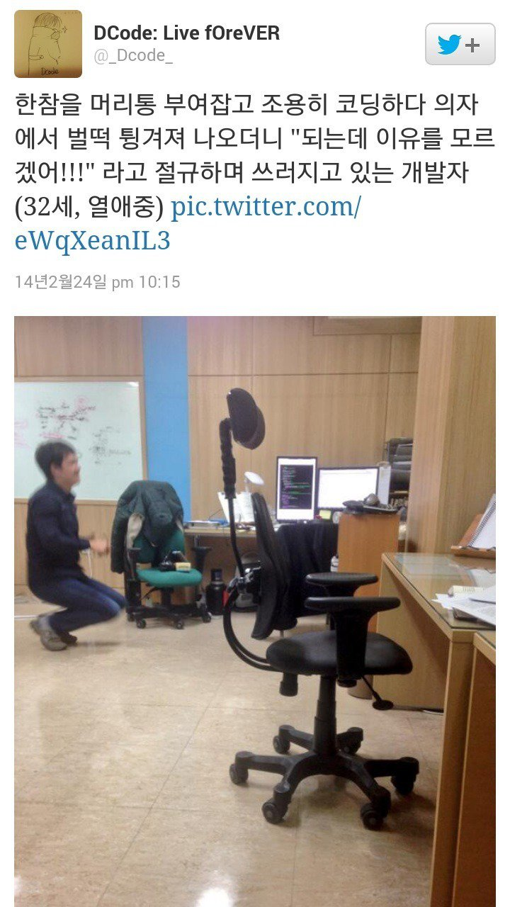
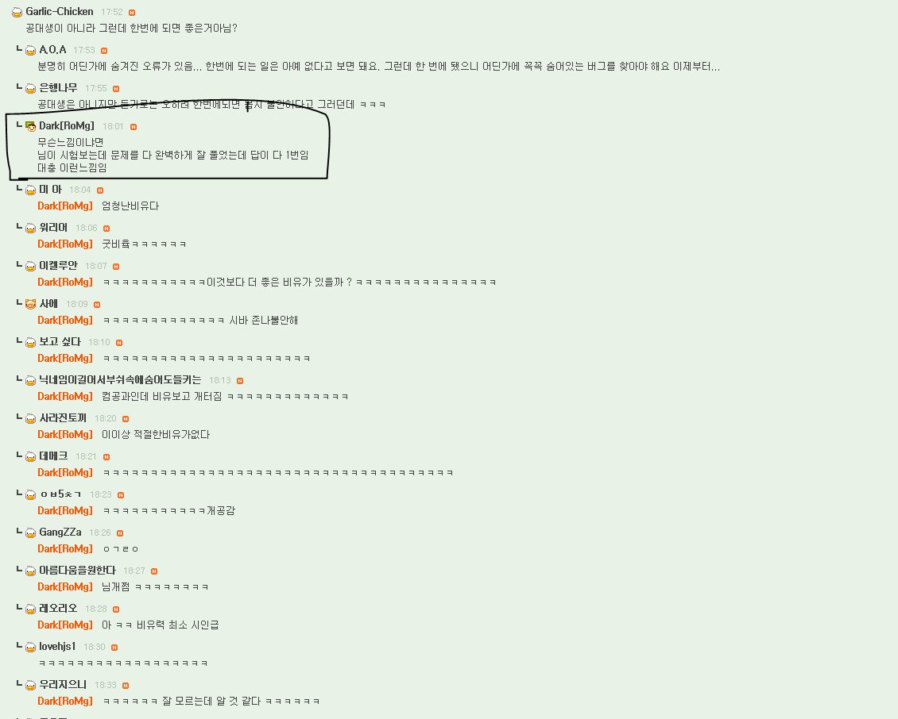

<!DOCTYPE html>
<html lang="ko">
	<head prefix="og: http://ogp.me/ns# article: http://ogp.me/ns/article#">
		<meta charset="UTF-8">

		<link rel="canonical" href="https://ichan.co/post/7JMMqyRE">

		<meta name="author" content="ichan">
		<meta name="description" content="심란해서 미쳐버릴 때.jpg">
		<meta name="keywords" content="meme, news, trending, 이슈, 유머, 커뮤니티, 뉴스, 재미, 인기, 아이챈">
		<meta name="referrer" content="same-origin">
		<meta name="creator" content="ichan">
		<meta name="publisher" content="ichan">
		<meta name="audience" content="all">

		<!-- schema.org-vocabulary metadata in JSON-LD -->
		<!-- Consumed by Google and Pinterest. -->
		<script type="application/ld+json">
			{
				"@context": "https://schema.org",
				"@type": "Article",

				"articleSection": "Meme",
				"articleBody": "<p></p>\n<p>\n<br></p>\n<p>\n</p>",
				"wordCount": 0,
				"speakable": null,


				"schemaVersion": "http://schema.org/version/5.0/",

				"accessMode": ["textual", "visual", "auditory"],
				"accessModeSufficient": [
					{
						"@type": "ItemList",
						"itemListElement": ["textual", "visual"],
						"numberOfItems": 2
					}
				],
				"accessibilityAPI": null,
				"accessibilityControl": ["fullKeyboardControl", "fullMouseControl", "fullTouchControl"],
				"accessibilityFeature": ["index", "readingOrder", "structuralNavigation", "ttsMarkup"],
				"accessibilityHazard": "unknown",
				"accessibilitySummary": "Mostly consists of images and texts; might have videos; lacks alternative descriptions for the images and videos.",

				"headline": "심란해서 미쳐버릴 때.jpg",
				"genre": "Meme",
				"text": "\n\n\n\n",
				"associatedMedia": null,
				"video": [],
				"thumbnailUrl": null,
				"keywords": "meme, news, trending, 이슈, 유머, 커뮤니티, 뉴스, 재미, 인기, 아이챈",

				"inLanguage": "ko",
				"isAccessibleForFree": true,
				"isFamilyFriendly": true,
				"typicalAgeRange": "0+",
				"audience": {
					"@type": "Audience",
					"audienceType": "all"
				},
				"dateCreated": "2019-11-12T04:53:08.802Z",
				"datePublished": "2019-11-12T13:14:59.934Z",
				"author": {"@id": "https://ichan.co"},
				"provider": {"@id": "https://ichan.co"},
				"publisher": {"@id": "https://ichan.co"},
				"sponsor": [],
				"material": ["health", "distress", "desperation", "artisanship", "perfectionism"],

				"version": null,
				"license": null,
				"position": 139,
				"discussionUrl": "https://ichan.co/post/7JMMqyRE#disqus_thread",
				"aggregateRating": null,


				"image": null,
				"identifier": "7JMMqyRE",
				"url": "https://ichan.co/post/7JMMqyRE"
			}
		</script>

		<!-- Pinterest-extended Open Graph metadata (markups in RDFa) -->
		<!-- Consumed by Pinterest, Twitter, and Facebook. -->
		<meta property="og:locale" content="ko">
		<meta property="og:url" content="https://ichan.co/post/7JMMqyRE">
		<meta property="og:type" content="article">
		<meta property="og:title" content="심란해서 미쳐버릴 때.jpg ⸺ 세상의 모든 이슈, 아이챈!">
		<meta property="og:description" content="심란해서 미쳐버릴 때.jpg">
		<meta property="og:determiner" content="">
		<meta property="og:site_name" content="ichan">
		<!--meta property="og:image" content="TOBEWRITTEN">
		<meta property="og:image:secure_url" content="TOBEWRITTEN">
		<meta property="og:image:type" content="TOBEWRITTEN">
		<meta property="og:image:width" content="TOBEWRITTEN">
		<meta property="og:image:height" content="TOBEWRITTEN"-->
		<meta property="article:published_time" content="2019-11-12T13:14:59.934Z">
		<meta property="article:author" content="https://ichan.co">
		<meta property="article:section" content="Meme">
		<meta property="article:tag" content="meme">
		<meta property="article:tag" content="news">
		<meta property="article:tag" content="trending">
		<meta property="article:tag" content="이슈">
		<meta property="article:tag" content="유머">
		<meta property="article:tag" content="커뮤니티">
		<meta property="article:tag" content="뉴스">
		<meta property="article:tag" content="재미">
		<meta property="article:tag" content="인기">
		<meta property="article:tag" content="아이챈">
		<meta property="og:see_also" content="https://ichan.co/post/xEH6wElW">
		<meta property="og:see_also" content="https://ichan.co/post/95Lb3zXF">
		<meta property="og:see_also" content="https://ichan.co/post/kklSNfmN">
		<meta property="og:see_also" content="https://ichan.co/post/pzOlA1KM">
		<meta property="og:see_also" content="https://ichan.co/post/u2SSz7ub">
		<meta property="og:see_also" content="https://ichan.co/post/Mx3SH04Z">

		<title>심란해서 미쳐버릴 때.jpg ⸺ 세상의 모든 이슈, 아이챈!</title>

		<meta name="theme-color" content="white">
		<meta name="color-scheme" content="light dark">
		<meta name="viewport" content="width=device-width">
		<meta name="msapplication-TileColor" content="white">

		<link rel="icon" href="/resources/images/logo.png">
		<link rel="apple-touch-icon" href="/resources/images/logo.png">

		<link rel="stylesheet" href="https://fonts.googleapis.com/css?family=Noto+Sans+KR:300,700&display=swap&subset=korean">
		<link rel="stylesheet" href="/resources/stylesheets/document.css">
		<link rel="stylesheet" href="/resources/stylesheets/header.css">
		<link rel="stylesheet" href="/resources/stylesheets/contents.css">
		<link rel="stylesheet" href="/resources/stylesheets/footer.css">
		<link rel="stylesheet" href="/resources/stylesheets/post.css">
		<link rel="stylesheet" href="/resources/stylesheets/disqus-thread.css">
		<link rel="stylesheet" href="/resources/stylesheets/index.css">
		<link rel="stylesheet" href="/resources/stylesheets/entry.css">
		<link rel="stylesheet" href="/resources/stylesheets/pagination.css">

		<!-- Google Analytics -->
		<script id="google-analytics" src="https://www.googletagmanager.com/gtag/js?id=UA-151994823-1" data-google-analytics-tracking-identifier="UA-151994823-1" async></script>
		<script type="module" src="/resources/modules/activate_google_analytics.mjs"></script>

		<script src="/resources/scripts/disqus.js"></script>
		<script src="https://s7.addthis.com/js/300/addthis_widget.js#pubid=ra-5dbf6d76272975b2" defer></script>
	</head>
	<body>
		<header class="header">
			<a class="header__home-page-link" href="https://ichan.co">
				아이챈
				<p class="header__catchphrase">세상의 모든 이슈</p>
			</a>
		</header>
		<main class="contents">
			<article class="contents__card post">
				<h1 class="post__title">심란해서 미쳐버릴 때.jpg</h1>
				<p></p>
<p>
<br></p>
<p>
</p>
			</article>
			<section id="disqus_thread" class="contents__card disqus-thread">
				<noscript>
					<p class="disqus-thread__unavailablility-notice">
						You have to enable Javascript to see and leave comments on this post.<br>
						이 글에 댓글을 달거나 그러한 댓글을 보려면 자바스크립트를 쓸 수 있게 설정하세요.
					</p>
				</noscript>
			</section>
			<section class="contents__card">
				<ul class="index">
					<li class="index__entry entry">
						<span class="entry__tag">#146</span>
						<a class="entry__link" href="/post/JqC2iXER">이런 친구 꼭 있다.jpg</a>
					</li>
					<li class="index__entry entry">
						<span class="entry__tag">#145</span>
						<a class="entry__link" href="/post/Xik8YyMY">세계 최고층 빈민가</a>
					</li>
					<li class="index__entry entry">
						<span class="entry__tag">#144</span>
						<a class="entry__link" href="/post/-v1fl2g4">역대급 몰카</a>
					</li>
					<li class="index__entry entry">
						<span class="entry__tag">#143</span>
						<a class="entry__link" href="/post/aJeaZN6y">전효성 클라스.swf</a>
					</li>
					<li class="index__entry entry">
						<span class="entry__tag">#142</span>
						<a class="entry__link" href="/post/S2elymQU">스폰지밥 레전드</a>
					</li>
					<li class="index__entry entry">
						<span class="entry__tag">#141</span>
						<a class="entry__link" href="/post/0sepoO50">3개월된 커플과 3년된 커플.gif</a>
					</li>
					<li class="index__entry entry">
						<span class="entry__tag">#140</span>
						<a class="entry__link" href="/post/GiX5F9OM">여친의 전남친이 보낸 문자.jpg</a>
					</li>
					<li class="index__entry entry entry--for-this-post">
						<span class="entry__tag">#139</span>
						<a class="entry__link" href="/post/7JMMqyRE">심란해서 미쳐버릴 때.jpg</a>
					</li>
					<li class="index__entry entry">
						<span class="entry__tag">#138</span>
						<a class="entry__link" href="/post/Ki7bMpcM">상황별 키보드 잡는 법.jpg</a>
					</li>
					<li class="index__entry entry">
						<span class="entry__tag">#137</span>
						<a class="entry__link" href="/post/kk7hf9CY">뭐 뭐 뭐 이새끼들아</a>
					</li>
					<li class="index__entry entry">
						<span class="entry__tag">#136</span>
						<a class="entry__link" href="/post/hsrYhJ5S">상병의 기묘한 탈영.jpg</a>
					</li>
					<li class="index__entry entry">
						<span class="entry__tag">#135</span>
						<a class="entry__link" href="/post/5jWvM4Z3">그딴건 문제도 아니지.jpg</a>
					</li>
					<li class="index__entry entry">
						<span class="entry__tag">#134</span>
						<a class="entry__link" href="/post/5ycwiSiR">소문으로만 듣던 손님이 실재했다</a>
					</li>
					<li class="index__entry entry">
						<span class="entry__tag">#133</span>
						<a class="entry__link" href="/post/huVBXOKI">일류 선수들의 피땀흘린 흔적</a>
					</li>
					<li class="index__entry entry">
						<span class="entry__tag">#132</span>
						<a class="entry__link" href="/post/vImOzc8o">사슴은 대체 뭐하는놈일까</a>
					</li>
					<li class="index__entry entry">
						<span class="entry__tag">#131</span>
						<a class="entry__link" href="/post/H1fHgYRu">이상한게 낚인 듯 하다</a>
					</li>
					<li class="index__entry entry">
						<span class="entry__tag">#130</span>
						<a class="entry__link" href="/post/HR5nlocd">내 키는 작아도 다른 키는 커진 듯 하다</a>
					</li>
					<li class="index__entry entry">
						<span class="entry__tag">#129</span>
						<a class="entry__link" href="/post/_RNi6Ac-">다리가 너무 길어져버렸다.jpg</a>
					</li>
					<li class="index__entry entry">
						<span class="entry__tag">#128</span>
						<a class="entry__link" href="/post/unUvbqYo">열도의 흔한 마라톤.jpg</a>
					</li>
					<li class="index__entry entry">
						<span class="entry__tag">#127</span>
						<a class="entry__link" href="/post/fsAyLz98">화 났을 때 하지 말아야 할 것들</a>
					</li>
				</ul>
			</section>
			<section class="contents__card contents__card--transparent-background">
				<ul class="pagination">
					<li class="pagination__button">
						<a class="pagination__index-page-link pagination__index-page-link--the-first-of-all" href="/index/1">1</a>
					</li>
					<li class="pagination__ellipsis">
						……
					</li>
					<li class="pagination__button">
						<a class="pagination__index-page-link" href="/index/8">8</a>
					</li>
					<li class="pagination__button">
						<a class="pagination__index-page-link" href="/index/9">9</a>
					</li>
					<li class="pagination__button">
						<a class="pagination__index-page-link" href="/index/10">10</a>
					</li>
					<li class="pagination__button pagination__button--longer">
						<a class="pagination__index-page-link pagination__index-page-link--this" href="/index/11">11</a>
					</li>
					<li class="pagination__button">
						<a class="pagination__index-page-link" href="/index/12">12</a>
					</li>
					<li class="pagination__button">
						<a class="pagination__index-page-link" href="/index/13">13</a>
					</li>
					<li class="pagination__button">
						<a class="pagination__index-page-link" href="/index/14">14</a>
					</li>
					<li class="pagination__ellipsis">
						……
					</li>
					<li class="pagination__button">
						<a class="pagination__index-page-link pagination__index-page-link--the-last-of-all" href="/index/18">18</a>
					</li>
				</ul>
			</section>
		</main>
		<footer class="footer">
			<h1 class="footer__title">ichan.co</h1>
			<p class="footer__catchphrase">
				세상의 모든 이슈, 아이챈!
			</p>
			<address class="footer__contacts">
				Any suggestions? Got to submit a post takedown notice?
				개선할 점 알리기 / 권리자의 자격으로 게시 중단 요청하기
				💁 <a href="mailto:hey@ichan.co">hey@ichan.co</a>
			</address>
		</footer>
	</body>
</html>
